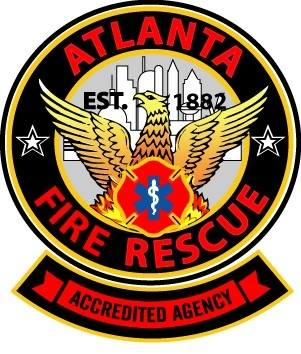

|

CITY OF ATLANTA FIRE RESCUE DEPARTMENTFire Chief Kelvin J. Cochran Public Safety Headquarters 226 Peachtree Street, SW Atlanta, Georgia 30303 Main: 404.546.7000 • Fax: 404.546.8761
Who We AreAtlanta Fire Rescue is a modern, all-hazards fire department. It has four divisions of labor, including the Offices of the Chief of Staff, Support Services, Field Operations and Airport Operations. Department staff operates out of 35 fire stations, which include five stations at Hartsfield-Jackson Atlanta International Airport. There are over 1,000 employees (988 sworn and 44 civilian) serving an area of 132 square miles within the city limits of Atlanta. The department also provides mutual aid to neighboring cities and counties upon request. MISSIONAtlanta Fire Rescue provides prompt quality services to our stakeholders that promote safety, security, enhances sustainability, and enriches the quality of life through professional development and dedication to service. |